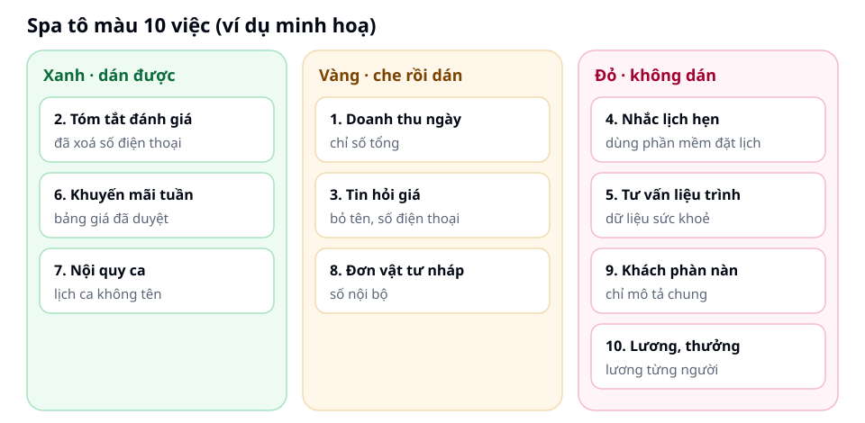
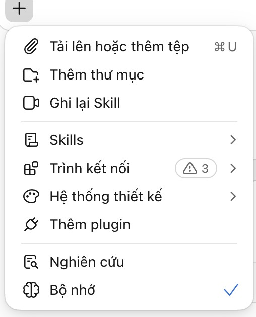
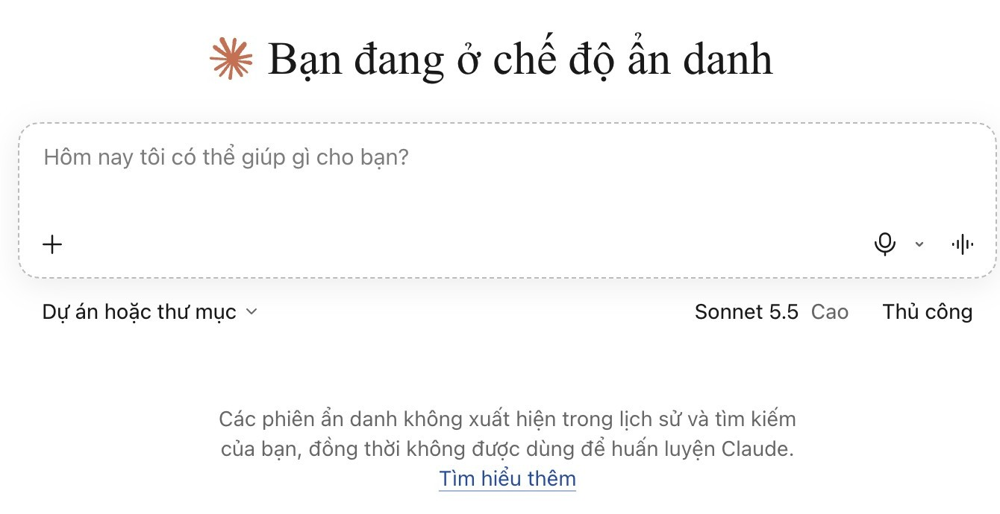
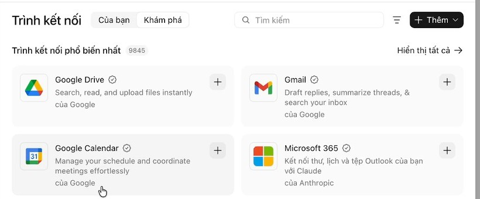
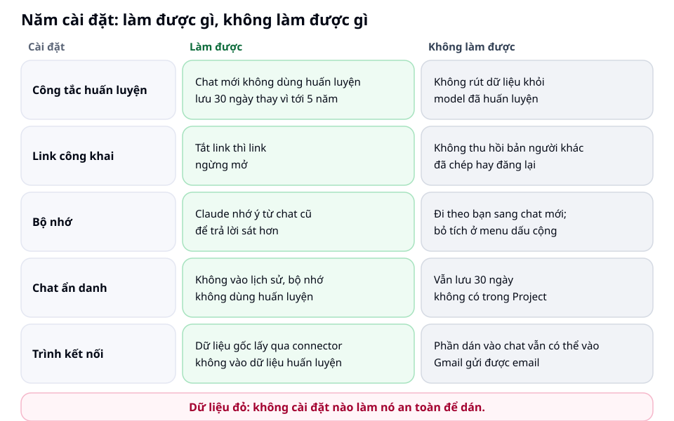
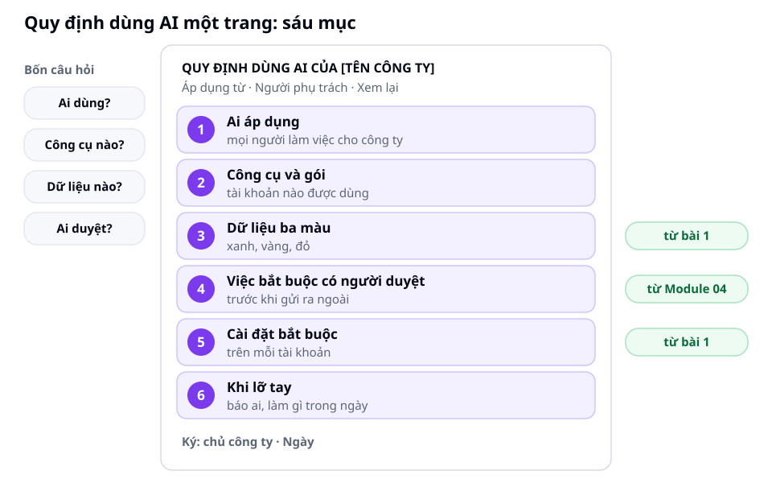
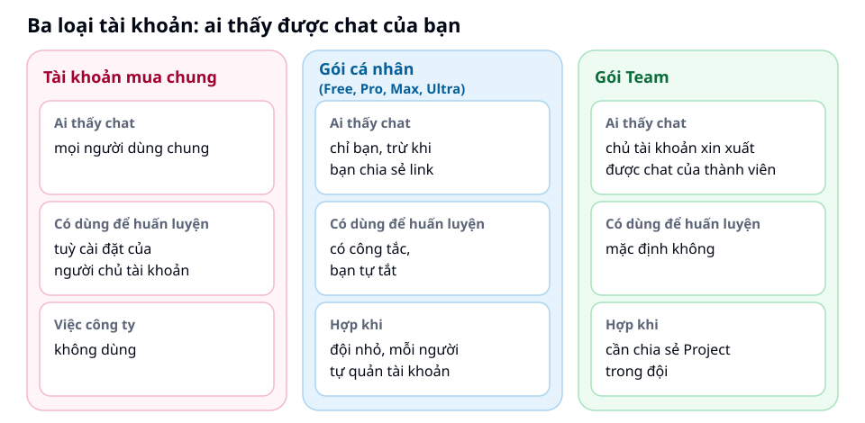

Dùng AI an toàn: dữ liệu và quy định
Biết dữ liệu nào được dán vào AI, kiểm cài đặt riêng tư, và viết một trang quy định cho cả đội.
Dữ liệu nào không bao giờ được dán vào AI? Cài đặt riêng tư ngay hôm nay
Sau bài này, bạn biết dữ liệu nào dán được, dữ liệu nào phải che trước, dữ liệu nào giữ lại, và đã kiểm cài đặt riêng tư của Claude.
"Mình tắt công tắc huấn luyện rồi, nên dán gì cũng được."
Tắt công tắc giúp giảm rủi ro. Dữ liệu đỏ vẫn là dữ liệu đỏ.
Hỏi màu của dữ liệu trước khi dán
Dán nguyên
Thông tin đã công khai: bảng giá đã công bố, đánh giá công khai, quy trình không có tên người.
Bỏ tên, số điện thoại, địa chỉ
Tin nhắn, email có tên và số điện thoại khách. Doanh thu, giá nhập: chỉ đưa số tổng.
Không đưa vào AI chat
Mật khẩu, mã OTP, số thẻ, ảnh căn cước, sức khoẻ của khách, lương từng người, dữ liệu theo thoả thuận bảo mật.
Màu đỏ dựa trên luật dữ liệu cá nhân của Việt Nam
Luật Bảo vệ dữ liệu cá nhân 91/2025/QH15
Có hiệu lực từ 01/01/2026. Đi kèm Nghị định 356/2025/NĐ-CP, cũng có hiệu lực từ 01/01/2026.
Sức khoẻ, sinh trắc học, căn cước, tài khoản và thẻ ngân hàng
Họ tên, ảnh, số điện thoại là dữ liệu cá nhân cơ bản: thuộc màu vàng.
Spa tô màu 10 việc lặp. Việc tư vấn liệu trình chuyển sang đỏ

Cùng là việc nhắn khách, một việc dán được, một việc không
Câu hỏi giá của khách
"Gói chăm sóc da 5 buổi giá bao nhiêu, có ưu đãi cuối tuần không?" Spa đã bỏ tên và số điện thoại trước khi dán, rồi nhờ Claude soạn câu trả lời.
Danh sách nhắc lịch 40 khách
Có tên và số điện thoại của 40 người. Bỏ hết tên thì danh sách không còn dùng được, nên việc này để phần mềm đặt lịch làm.
Mở Cài đặt → Quyền riêng tư
- Quyền riêng tư: bấm tên bạn ở góc dưới thanh bên, chọn Cài đặt, rồi mở tab này.
- "Help improve our AI models": công tắc cho phép dùng chat để huấn luyện. App tiếng Việt vẫn hiện chữ tiếng Anh.
- Bộ nhớ: tab xem Claude đang nhớ gì về bạn.
Ảnh chụp app Claude Desktop, gói Ultra, ngày 11/11/2026. Khung số do The AI Growth vẽ thêm.
Tắt công tắc thì được gì, và không được gì?
Chat mới không dùng để huấn luyện
Anthropic giữ chat 30 ngày rồi xoá. Nếu bật công tắc, Anthropic giữ dữ liệu đã bỏ danh tính tới 5 năm.
Rút dữ liệu khỏi model đã huấn luyện
Chat đã nằm trong lượt huấn luyện đang chạy hoặc trong model đã xong thì vẫn ở đó.
Bộ nhớ mang ý từ chat cũ sang chat mới
Claude nhớ điều bạn từng nói để trả lời sát hơn. Bạn mở Cài đặt → Bộ nhớ để xem Claude đang nhớ gì.
Trong menu dấu cộng có mục Bộ nhớ. Dấu tích nghĩa là chat này đang dùng bộ nhớ.

Ảnh chụp app Claude Desktop ngày 11/11/2026: menu dấu cộng, dòng cuối là Bộ nhớ.
Chat ẩn danh: không vào lịch sử, nhưng vẫn lưu 30 ngày

Ảnh chụp app Claude Desktop ngày 11/11/2026: màn hình "Bạn đang ở chế độ ẩn danh".
- Mở: bấm icon con ma ở góc trên phải màn hình chat mới.
- Được: không vào lịch sử, không vào bộ nhớ, không dùng để huấn luyện.
- Vẫn còn: Anthropic giữ 30 ngày. Trong Project không có chat ẩn danh.
Dữ liệu lấy qua trình kết nối không dùng để huấn luyện
Claude đọc Drive, Gmail qua trình kết nối. Phần dữ liệu gốc đó không vào dữ liệu huấn luyện.
Phần bạn chép rồi dán thẳng vào chat thì theo công tắc huấn luyện.
Theo trang quyền riêng tư Anthropic, kiểm 11/11/2026.

Ảnh chụp app Claude Desktop: Cài đặt → Trình kết nối.
Mỗi cài đặt giảm một phần rủi ro

Cài đặt giống kéo rèm phòng họp.
Người ngoài không nhìn vào được. Nhưng biên bản vẫn nằm trong tủ của toà nhà một thời gian.
Ba đường dữ liệu rời khỏi bạn mà không cần dán
Link chia sẻ chat
Ai có link đều xem được, không cần tài khoản Claude.
Nút đánh giá câu trả lời
Bấm thích hay không thích là gửi cả cuộc trò chuyện về Anthropic.
Bot chạy nền
Ví dụ ChatGPT dots làm việc giữa các lần chat, có cài đặt riêng.
Link chia sẻ là link công khai
"Gửi sếp xem cho nhanh"
Nhân viên bấm Chia sẻ, gửi link chat có bảng doanh thu vào nhóm Zalo. Ai trong nhóm chuyển tiếp link thì người ngoài cũng mở được.
Link ngừng mở, bản đã chép thì không thu hồi được
Gói Team chỉ chia sẻ được trong tổ chức. Gói Free, Pro, Max, Ultra có link công khai.
Bấm thích hay không thích: cả cuộc trò chuyện được lưu tới 5 năm.
Dữ liệu này có thể dùng để huấn luyện. Theo trang quyền riêng tư Anthropic, kiểm 11/11/2026.
Bot chạy nền có cài đặt dữ liệu riêng
Ảnh chụp trang OpenAI "Giới thiệu dot" (tiếng Việt), ngày 20/11/2026. Khung số do The AI Growth vẽ thêm.
- Gói cá nhân: bạn quyết định hội thoại và việc của dot có được dùng để cải thiện model hay không.
- Business, Enterprise, Edu: mặc định không dùng để cải thiện model.
Tô màu dữ liệu cho 5 việc lặp của bạn
- 1Hỏi màu của dữ liệu trước khi dán: xanh dán nguyên, vàng che rồi đưa, đỏ giữ lại.
- 2Cài đặt riêng tư giảm rủi ro, nhưng không đổi màu đỏ.
- 3Link chia sẻ, nút đánh giá và bot chạy nền cũng đưa dữ liệu ra ngoài.
Quy định dùng AI một trang: mẫu để công ty ban hành ngay tuần này
Sau bài này, bạn có bản quy định dùng AI một trang, 6 mục, sẵn để mời đội góp ý.
Mỗi người dùng AI một kiểu.
Một người dán danh sách khách
Vì nghĩ tắt công tắc rồi là xong.
Một người đăng bài AI viết
Không ai đọc lại trước khi đăng.
Bốn câu hỏi, sáu mục
Ai được dùng AI cho việc công ty?
Công cụ và gói nào?
Dữ liệu nào được đưa vào?
Việc gì phải có người duyệt?

Mỗi mục trả lời một câu, lấy từ một bài đã học
Ai áp dụng
Ai được dùng AI cho việc công ty?
Công cụ và gói
Dùng tài khoản nào? Phần sau của bài này.
Dữ liệu ba màu
Dán gì, che gì, giữ gì? Lấy từ bài 5.1.
Việc phải có người duyệt
Bước nào cần người đọc? Lấy từ bài 4.2.
Cài đặt bắt buộc
Công tắc nào, chế độ quyền nào? Lấy từ bài 5.1.
Khi lỡ tay
Báo ai, ai phụ trách, ngày nào xem lại?
Giống nội quy dùng xe công ty.
Ai được lái, xe nào, chở gì, ai ký sổ khi xe ra cổng. Bốn dòng đó đủ để không ai lấy xe đi lung tung.
Ba cách đội đăng ký tài khoản, và ai thấy được chat

Tài khoản nào dùng cho việc công ty
| Loại tài khoản | Ai thấy chat | Hợp khi |
|---|---|---|
| Mua chung | Mọi người dùng chung | Không dùng cho việc công ty |
| Gói cá nhân (Free, Pro, Max, Ultra) | Chỉ bạn, trừ khi bạn chia sẻ link. Bạn tự tắt công tắc huấn luyện | Đội nhỏ, mỗi người tự quản tài khoản |
| Gói Team | Bạn. Chủ tài khoản xin xuất được chat của thành viên | Cần chia sẻ Project trong đội |
Gói Team: mặc định không dùng chat để huấn luyện
Ảnh chụp trang Anthropic "Is my data used for model training?" (sản phẩm cho doanh nghiệp), ngày 21/11/2026. Khung số do The AI Growth vẽ thêm.
- Mặc định: Anthropic không dùng chat của gói cho doanh nghiệp như Team để huấn luyện.
- Ngoại lệ: bạn bấm nút đánh giá, báo lỗi, hoặc tự cho phép thì chat có thể được dùng.
Mọi bước gửi ra ngoài có một người duyệt đứng ngay trước
Người làm
AI Assisted
AI Agents
Người duyệt
"Câu trả lời đánh giá Google do Claude soạn nháp, chủ spa đọc rồi mới đăng."
Từ 16/09/2026, Claude tự làm nhiều bước ngay trong ô chat
- Chat và Cowork là một: không còn phải chọn chế độ.
- Một cuộc trò chuyện: Claude tự chuyển sang làm nhiều bước khi việc cần.
- Nhận dần: Pro, Max, Ultra nhận dần. Gói Team mặc định bật từ 01/12/2026.
Ảnh chụp trang trợ giúp Anthropic "Claude Cowork and chat are one Claude", ngày 21/11/2026. Khung số do The AI Growth vẽ thêm.
Hai chế độ quyền: Tự động và Thủ công
- Auto (Tự động): mặc định ở Pro, Max, Ultra, Team. Claude làm tiếp, không dừng hỏi từng bước.
- Manual (Thủ công): Claude hỏi trước mỗi hành động, bạn chọn cho hay không.
- Việc có hậu quả thật như gửi tin nhắn: Anthropic khuyên ngồi gần và xem Claude làm.
Ảnh chụp trang trợ giúp Anthropic "Claude Cowork and chat are one Claude", mục "Choose how much Claude checks with you", ngày 21/11/2026. Khung số do The AI Growth vẽ thêm.
Chat có bước gửi email thì để Thủ công

Ảnh chụp app Claude Desktop ngày 11/11/2026: menu Chế độ quyền ở góc phải dưới ô nhập.
- Tự động: cho việc nội bộ, không gửi gì ra ngoài.
- Thủ công: cho chat có bước gửi email, đăng bài, sửa file quan trọng.
Từ 01/03/2026, Việt Nam có Luật Trí tuệ nhân tạo.
Luật số 134/2025/QH15. Mẫu quy định nhắc tên luật này. Công ty bạn phải làm gì cụ thể, hỏi luật sư.
Nhờ Claude điền mẫu thành quy định một trang
- 1Quy định dùng AI chỉ cần một trang trả lời bốn câu hỏi.
- 2Không dùng tài khoản mua chung cho việc công ty.
- 3Mọi bước gửi ra ngoài có người duyệt. Chat có bước gửi thì để chế độ Thủ công.
Tiếp theo: Module 06
Dựng nhân viên AI: Project, Skill và connector.